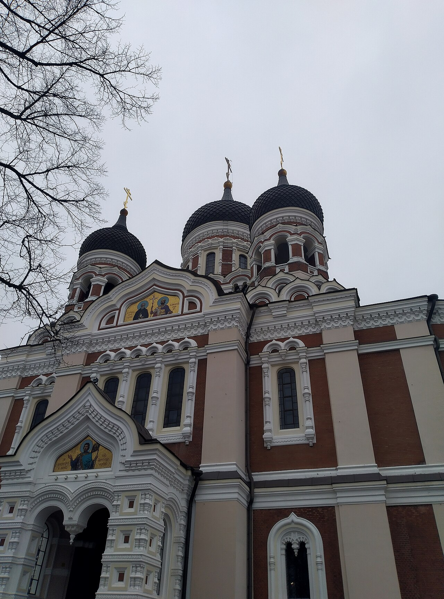

헬싱키 탈린
일반- 수단
- 배 · Tallink·Viking Line·Eckerö Line 페리
- 소요
- 약 2시간 5분
- 환승
- 직행
하루 여러 편, 2시간~2시간 30분. 겨울 폭풍 때 지연될 수 있습니다.


헬싱키에서 하룻밤, 탈린에서 2~3박하고 다시 페리로 헬싱키 공항으로 돌아갑니다. 직항 왕복이라 짧은 일정에도 이동 부담이 적습니다.


지도: © OpenStreetMap 기여자
현지 4박 5일 · 헬싱키 1박 → 탈린 3박
도착 인천 → 헬싱키 공항. 도착일은 숙소 주변 위주로 가볍게.
원로원 광장·헬싱키 대성당 → 마켓 광장 → 우스펜스키 대성당 → 템펠리아우키오 암석 교회 → 오디 도서관.
배로 15분 거리의 수오멘린나 요새까지 넣으면 하루 일정입니다.
숙박: 헬싱키
이동 헬싱키 → 탈린 · 배 약 2시간 5분 일반
비루 문 → 시청 광장 → 톰페아 언덕(알렉산드르 네프스키 대성당) → 코흐투오차·파트쿨리 전망대 → 성벽 길.
여름에는 밤 10시가 넘어도 밝습니다.
숙박: 탈린
카드리오르그 궁전·쿠무 미술관 → 텔리스키비 창작 지구 → 발티 야마 시장.
숙박: 탈린
레누사담 해양박물관 → 피리타 해변, 또는 라헤마 국립공원 당일 투어.
숙박: 탈린
이동 탈린 → 헬싱키 · 배 약 2시간 5분 일반
탈린에서 헬싱키(으)로 이동해 출국합니다. 이동 시간에 공항 수속 2~3시간을 더해 항공편을 고르세요. 귀국편은 대부분 다음 날 한국에 도착합니다.
하루 여러 편, 2시간~2시간 30분. 겨울 폭풍 때 지연될 수 있습니다.
하루 여러 편, 2시간~2시간 30분. 겨울 폭풍 때 지연될 수 있습니다.
마지막 숙박지에서 출국 공항 도시까지의 이동입니다.
국경 모두 솅겐 지역입니다.
6·7·12월
1~3월(짧은 낮, 혹한)
6~7월은 밤 11시까지 밝고, 12월에는 탈린 시청 광장 크리스마스 마켓이 열립니다.


중기·장기(7~8박) · 3개국 · 추천 6·7·8월
중세 탈린, 아르누보 리가, 바로크 빌뉴스. 세 수도를 4시간 간격으로 잇는 발트 기본 코스.


장기(8~9박) · 4개국 · 추천 6·7·8월
인천–헬싱키 직항을 살려 페리로 발트해를 건너는 코스.


초장기(11~12박) · 4개국 · 추천 6·7월
탈린에서 바르샤바까지 발트해 동쪽을 따라 내려오는 12박 안팎의 장거리 코스.



단기·중기(4~5박) · 2개국 · 추천 12월
2019년 유럽 최고 크리스마스 마켓에 뽑힌 탈린과 리가를 잇는 짧은 겨울 여행.
정보 확인일 2026-11-21